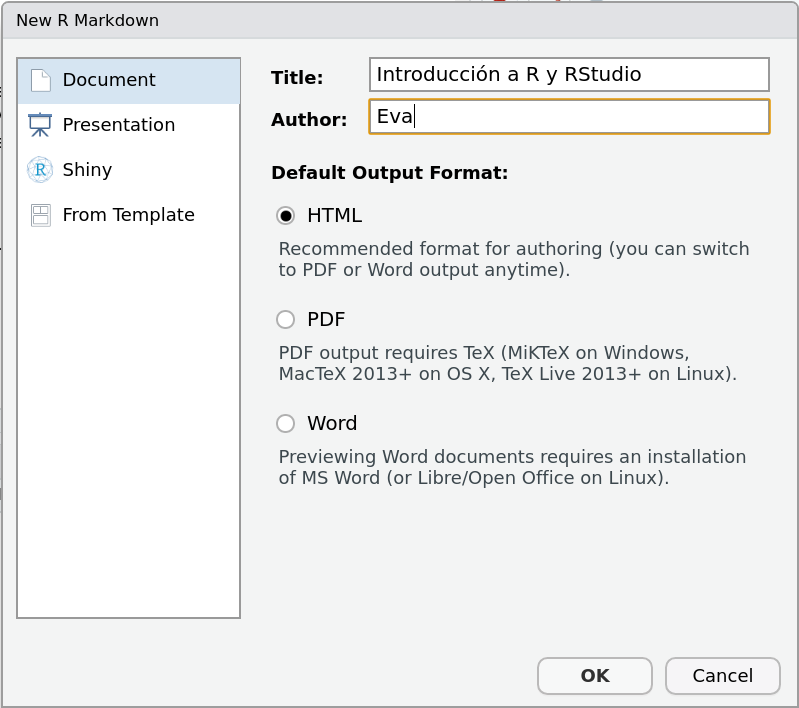
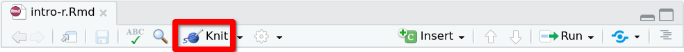
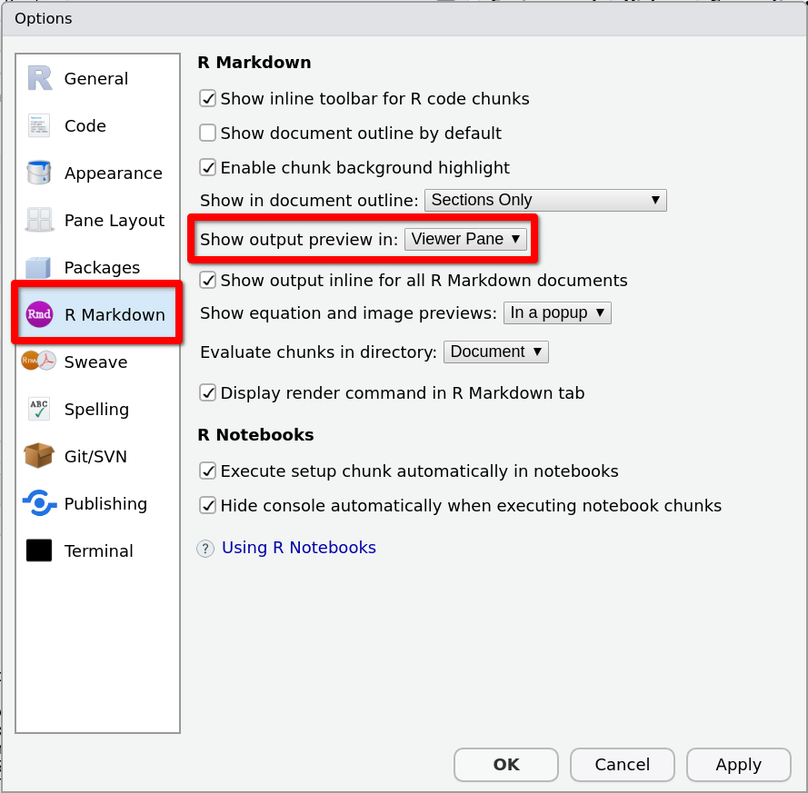
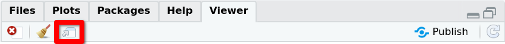

2.3 Documentos R Markdown
Nuestra elección para realizar las prácticas y tareas de esta asignatura será utilizar documentos R Markdown. En un documento R Markdown podremos escribir tanto código R como texto. Y al compilarlo obtendremos un documento que incluirá el código, la salida resultante de ejecutar el código, y el texto explicativo.
- En el texto podremos utilizar la sintaxis propia del lenguaje de marcado Markdown (independiente de R). Por ejemplo:
El resultado anterior permite extraer una conclusión muy **importante**.- Y el código de R se incluirá en unos bloques especiales, que tendrán la estructura
```{r [etiqueta], [opciones]}
<código R>
```2.3.1 Creación
Para crear tu primer documento R Markdown utiliza el menú
Aparecerá un cuadro de diálogo de nombre New R Markdown.

Rellena ‘Introducción a R y RStudio’ en el campo Title y tu nombre en el campo Author. Para el campo Default output format, conserva la elección ‘HTML’ que aparece por defecto.
Al presionar el botón OK se abrirá una nueva pestaña en el panel de RStudio con el nuevo documento R Markdown. Presiona Ctrl + S para guardarlo, en la carpeta IntroR que creaste antes para la práctica, con el nombre intro-r. Verifica que la etiqueta de la pestaña del documentocambia de Untitled1 a intro-r.Rmd.
Las primeras líneas del archivo (1 a 6), delimitadas por tres guiones (---)
---
title: "Introducción a R y RStudio"
author: "Eva"
date: "19/4/2021"
output: html_document
---conforman la llamada cabecera YAML del documento. Incluye metadatos como el título, el autor y la fecha y el formato de salida del documento que se generará al compilar.
Las líneas siguientes (8 a 10)
```{r setup, include=FALSE}
knitr::opts_chunk$set(echo = TRUE)
```las analizaremos con más detalle en la sección 3.3.
El resto de líneas (12 en adelante), son los contenidos propiamente dichos del documento. Se trata de unos contenidos de muestra, que enseguida reemplazaremos por nuestros contenidos propios. Pero antes de borrar estos contenidos de muestra, compilaremos el documento para ver el resultado inicial.
2.3.2 Compilación
Para compilar el documento presiona el botón Knit en la barra de herramientas de la pestaña del archivo.

El documento compilado aparecerá en el panel Viewer, en la ventana de la zona derecha inferior. Si el documento no se abre en este panel, sino en una ventana emergente, cierra esa ventana y modifica este comportamiento siguiendo los siguientes pasos:
- Selecciona el menú
- Se abrirá una ventana de nombre Options. Selecciona la sección R Markdown en el menú lateral e indica
como indica la imagen siguiente: 
Si miras los contenidos de la carpeta IntroR (puedes hacerlo desde el panel Files de RStudio) verás que, como resultado de la compilación del archivo fuente intro-r.Rmd, se ha creado el archivo de salida intro-r.html. Éste es el archivo que estamos visualizando en el visor de documentos. También podríamos abrirlo en el navegador web, pudiendolo hacer desde el propio visor, presionando el icono resaltado en la siguiente imagen:

A continuación compararemos el documento fuente intro-r.Rmd con el documento intro-r.html en el visor, para entender cómo se traducen los contenidos que escribimos en un archivo R Markdown en el formato de salida HTML. Nos fíjaremos en particular en los siguientes elementos: encabezados y bloques de código, que se describen en los dos siguientes apartados.
2.3.3 Encabezados
Las líneas 12
## R Markdown y 22
## Including Plotsse traducen en la salida como encabezados de secciones. Si inspeccionas el código del archivo intro-r.html verás que se crean elementos de tipo <h2>. En general,
# Títuloproduce un encabezado de nivel 1,
## Títuloun encabezado de nivel 2, y así sucesivamente.
Hay que indicar que es una casualidad la coincidencia del símbolo # para encabezados en el lenguaje Markdown (independiente de R ) y para comentarios en código R.
2.3.4 Bloques de código
Los elementos protagonistas del documento son los bloques de código R (code chunks). En el documento de muestra encontramos dos bloques de código: El primero en las líneas 18-20
```{r cars}
summary(cars)
```y el segundo en las líneas 26-28
```{r pressure, echo=FALSE}
plot(pressure)
```Si miras el documento compilado, verás que, para el primer bloque se muestra el código y a continuación la salida o resultado de su ejecución; mientras que para el segundo, se muestra solo la salida, y no el código. Esto es debido a la opción echo=FALSE.
Como se indicó al principio de la sección, la sintaxis general para incluir un bloque de código R en un documento R Markdown es la siguiente:
```{r [etiqueta], [lista de opciones]}
<código R>
```Las etiquetas de los dos bloques de código del documento de muestra son cars y presure. La etiqueta de un bloque de código sirve para identificarlo, podemos interpretarlo como su nombre, pero es opcional y puede omitirse.
El primer bloque de código no tiene ninguna opción. Y el segundo tiene la opción echo=TRUE, que como acabamos de decir inhibe la impresión del código en el documento compilado.
Puesto que la etiqueta y la lista de opciones son opcionales, el esqueleto básico de un bloque de código R incluido en un documento R Markdown es
```{r}
<código R>
```En el cuerpo del bloque podemos escribir instrucciones de R igual que si estuvieramos escribiendo en un script (incluidos comentarios precedidos por el carácter #).
Notar el cambio de enfoque al escribir en un documento R Markdown respecto a escribir en un script:
En un script, se espera que escribamos código R, y para escribir texto ordinario hemos de usar comentarios utilizando el carácter
#Por el contrario, en un documento R Markdown, se espera que escribamos texto (con posibilidad de incluir la sintaxis propia del lenguaje Markdown), y para escribir código R hemos de incluirlo en un bloque especial delimitado por la línea
```{r}al comienzo y la línea```al final.